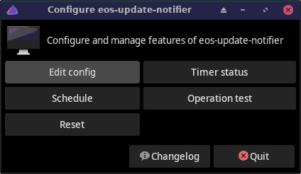

Manages and configures certain features of
eos-update-notifier with a small GUI.

eos-update-notifier-configureVariable EOS_SUDO_EDITORS in configuration file
/etc/eos-script-lib-yad.confdetermines which editor will be used when editing the configuration file
/etc/eos-update-notifier.confafter clicking the Edit config button above.
Note that environment variables SUDO_EDITOR,
VISUAL, or EDITOR can be used if
EOS_SUDO_EDITORS is not set.